3.2.8. Блочный шифр MARS.
3.2.8. Блочный шифр MARS
Алгоритм MARS был разработан коллективом криптологов из корпорации IBM. Именно IBM в свое время разработала семейство алгоритмов Lucifer, которое легло в основу прошлого стандарта шифрования США − DES. Из авторов Lucifer в разработке алгоритма MARS принял участие Дон Копперсмит (Don Coppersmith), известный также и другими работами в области криптологии.
Структура алгоритма MARS представлена на рис. 3.27.
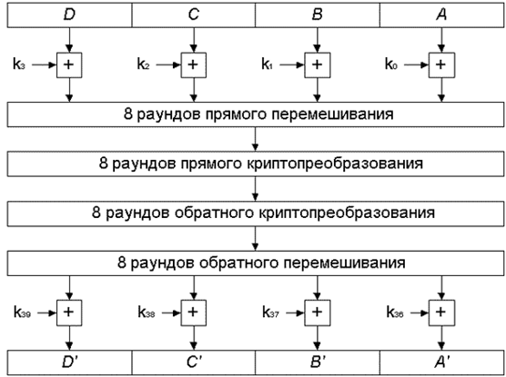
Рис. 3.27. Структура алгоритма MARS
1. Предварительное наложение ключа: на 32-битные подблоки A, B, C, D накладываются 4 фрагмента расширенного ключа k0...k3 операцией сложения по модулю 232.
2. Выполняются 8 раундов прямого перемешивания (без участия ключа шифрования).
3. Выполняются 8 раундов прямого криптопреобразования.
4. Выполняются 8 раундов обратного криптопреобразования.
5. Выполняются 8 раундов обратного перемешивания, также без участия ключа шифрования.
6. Финальное наложение фрагментов расширенного ключа k36...k39 операцией вычитания по модулю 232.
Этапы 3 и 4 называются «криптографическим ядром» алгоритма MARS.
Алгоритм представляет собой расширенную сеть Фейстеля. В каждом раунде выполняется обработка одного из подблоков и наложение результатов обработки на остальные подблоки, после чего подблоки меняются местами (рис. 3.28). Конкретные преобразования зависят от типа раунда и будут рассмотрены ниже. Кроме того, между раундами могут выполняться различные дополнительные действия, которые также будут описаны далее.
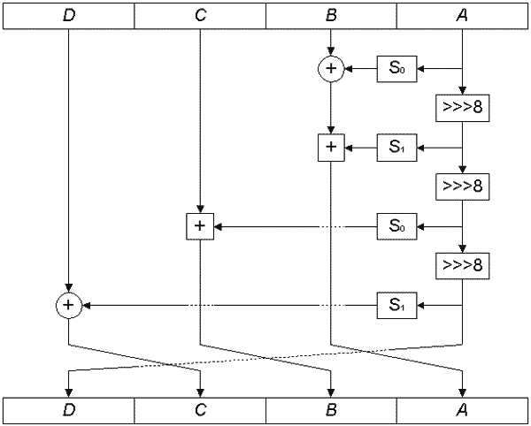
Рис. 3.28. Раунд прямого перемешивания
Как видно из рисунка, в раунде прямого перемешивания выполняются следующие действия:
1. Значение подблока A прогоняется через таблицу замен S0 и накладывается на подблок B операцией XOR.
2. Исходное значение подблока A вращается на 8 бит вправо.
3. Результат предыдущего шага обрабатывается таблицей замен S1 и снова накладывается на подблок B операцией сложения по модулю 232.
4. Результат шага 2 вращается на 8 бит вправо.
5. Результат предыдущего шага обрабатывается таблицей замен S0 и накладывается на подблок С операцией сложения по модулю 232.
6. Результат шага 4 вращается на 8 бит вправо.
7. Результат предыдущего шага обрабатывается таблицей замен S1 и накладывается на подблок D операцией XOR.
8. Подблоки меняются местами, как показано на рис. 3.28.
Кроме того, в некоторых раундах прямого перемешивания выполняются следующие дополнительные операции (рис. 3.29):
1) в раундах 0 и 4 после шага 7 выполняется наложение значения подблока D на подблок A операцией сложения по модулю 232;
2) в раундах 1 и 5 подблок B аналогичным образом накладывается на подблок A.
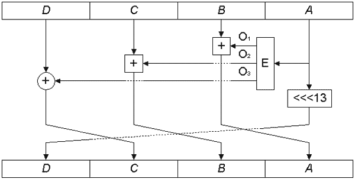 |
Рис. 3.29. Структура раунда прямого криптопреобразования |
По словам авторов алгоритма, эти операции существенно усиливают алгоритм MARS против дифференциального криптоанализа.
Основой раунда является расширяющее криптопреобразование E, преобразующее 32-битное входное слово A в три выходных 32-битных значения, каждое из которых определенным образом накладывается на остальные подблоки (рис. 3.30). После этого подблок A вращается влево на 13 бит, затем подблоки меняются местами аналогично раунду прямого перемешивания.
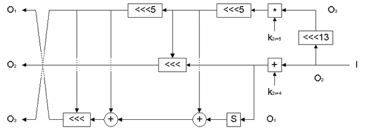
Рис. 3.30. Структура преобразования E
Из входного значения формируются три потока O1...O3, над которыми производятся следующие действия:
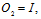
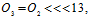
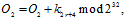
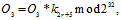

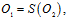
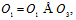
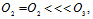
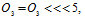

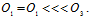
Здесь: I − входное значение; r − номер текущего раунда, считая с 0-го (при нумерации раундов в данном случае учитываются только раунды криптоядра алгоритма); S − табличная замена для операции E, представляет собой объединение описанных выше таблиц S0 и S1; объединенная таблица содержит 512 значений, выходное значение выбирается по значению 9 младших бит входного слова.
Стоит обратить внимание на то, что в преобразовании E используются операции вращения на переменное число бит; в этом случае запись O3’ обозначает, что число бит вращения определяется значением младших пяти бит текущего значения O3.
Расшифрование выполняется применением обратных операций в обратной последовательности.